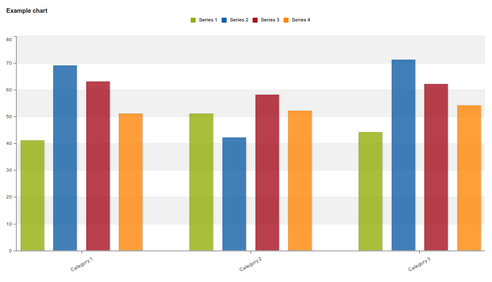

This section lets you define which dimension of the data you want to appear as series, category and filter. This asks for a closer explanation. Dimension in this regard refers to the elements which describe the data values in the system. We have three main dimensions in the system:
Data: Includes data elements, indicators and datasets (reporting rates), describing the phenomena or event of the data.
Periods: Describes when the event took place.
Organisation units: Describes where the event took place.
The visualization module lets you use these dimensions completely flexible in terms of appearing as series, categories and filter. Understanding these concepts is most easily done by looking at the screenshot from the opening page below:
|  |
More formally this can be described as following:
Series: A series is a set of continuous, related elements (e.g. periods or data elements) which you want to visualize in order to emphasize trends or relations in its data.
Categories: A category is a set of elements (e.g. indicators or organisation units) for which you want to compare its data.
Filter: Since most charts are two-dimensional, a filter must be used on the third dimension in order to use only a single element for the chart to become meaningful.